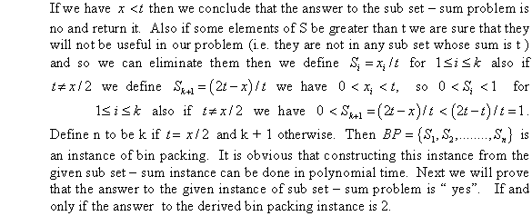
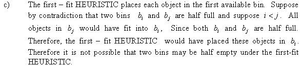
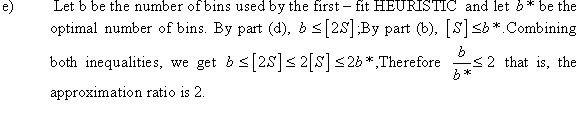
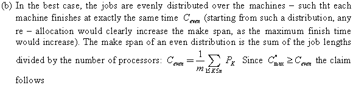
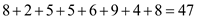
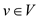
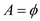
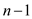

Maximum Spanning Tree:
A spanning tree of a connected graph is the tree with minimum number of edges that can cover all the vertices of the graph. That is, it is a tree from which if even one edge is removed, it will become disconnected.
If G is a weighted graph, the maximum spanning tree for that graph will be a spanning tree which will possess maximum total weight. That is, no other spanning tree with weight greater than or equal to maximum spanning tree can be found. The maximum spanning tree can also be called maximum connector in a graph G.
For example: Consider the graph G (V, E) with 9 vertices and 16 edges.

The spanning tree, that is, the tree which connects the vertices of the graph with the edges of maximum weight is as follows:
This tree is called the maximum spanning tree of the graph. The maximum weight of the spanning tree is .
Each vertex max
(v) represents the edge with large value of weight.
Mathematically, for an edge  , it is
defined as follows:
, it is
defined as follows:
The set of the graph is defined as . It is the set of edges of maximum weight. The tree is defined as the spanning tree of the graph having the maximum value of total weight.
a.
Consider the following graph G given below:
The setfor the graph is as follows:
The highlighted edges of the graph form the maximum spanning tree for the graph. The edges in the spanning tree are given below:
In the above graph, the total weight for the set is .
Hence, the above graph is an example that satisfies the condition, .
To show , consider the graph below in which the dark edges show the maximum spanning tree of the graph.
For the above graph, .
The total weight of the graph is.
The edge set for the maximum spanning tree is and the total weight is .
Hence, the above graph is an example that satisfies the condition .
c.
Consider a graph G to prove that . Here,
is
the set of maximum weight edges incident on each vertex and
is
the maximum spanning tree of .
.
It is known that for a graph G, whatever maximum spanning tree would be found, it will include the maximum weight edges (by the actual definition of a maximum spanning tree).
In the set, the edges with maximum weights are incident on each vertex and eventually each of these edges is already contained in the maximum spanning tree.
Therefore, as would be a subset of .
d.
To show that, it is enough to show that weight of maximum spanning tree will be greater than maximum weight of incident on each vertex.
As seen in the above part, , would occupy with the respective weights.
The weights would have more weights as they have the edges which form the maximum spanning tree. If the given condition does not follow, it would not form a spanning tree.
Therefore, for any graph G .
e.
The following is the 2-approximation algorithm to the maximum spanning tree:
2-APPROXIMATION ALGORITHM
1 Sort the edges of in
decreasing order on the basis of weight.
Assume that  is the set
of edges which consist of the maximum spanning tree.
is the set
of edges which consist of the maximum spanning tree.
Initiate.
2 Add the first edge to .
3 Now, add the next edge to only if it
does not form a cycle in.
4 If no edges are left anymore, exit and conclude graph
as
a disconnected graph.
5 If has
edges
(here, n is the total number of vertices in)
Output.
else go to step 3.
The above algorithm selects the subsequent vertices and the edges imposed on them will take time .
Therefore, 2-APPROXIMATION ALGORITHM is the required algorithm that computes a 2-approximation to the maximum spanning tree with running time .
The knapsack problem is the problem in which the selection of items for filling a knapsack of some definite capacity is done. The items are selected in such a way that they have the weight less than the capacity of knapsack but the value must be as good as possible.
1-1 knapsack problem and fractional knapsack problem:
The 0-1 knapsack problem is the problem which hinders the number of copies of every type of item to either zero or one.
Numerically, the formulation of the 0-1 knapsack problem can be done as:
Assume that there are  items. A
non-negative value
items. A
non-negative value  and
weight
and
weight is
associated with each item
is
associated with each item .
.
Now the aim of the problem is to make the value of items as large as it can be done. Each value tends to a weight such that it must be less than the capacity of the knapsack as:
and.
The fractional knapsack problem is the one in which the fractions of the items can be taken for the filling of knapsack. The value and weight of the knapsack are considered for that one fraction of the item.
a.
In 0-1 knapsack problem of, instance I is the set of n item in which each item j has profit and weight for all value of.
The transformation actually changes in very hard instance of the 0-1 knapsack problem.
Where, .
From above equation it is clear that optimal solution only select those items which capacity is maximum.
Hence, the optimal solution to instance of 0-1 knapsack is one of .
b.
To show that finding an optimal solution to the
fractional problem for instance by including
item 
• The optimal solution can be
constructed to the fractional problem for instance by
including item. This would
be possible if item is chosen in the set with the
given maximum values.
• As it is known that 0-1 knapsack problem gives output 0 or 1 with maximum value.
• The item chosen should be in the order of increasing weight obtaining optimal solution
c.
Consider the following procedure to construct an optimal solution.
Finding an optimal solution to the fractional problem for instance by including the entire item or none of the item in the 0-1 knapsack problem because if one item is inserted then no item can be removed later in instance and the knapsack problem would not succeed.
Hence user can always construct the optimal solution to the fractional problem.
d.
If an optimal solution is obtained to the fractional problem for instanceby deleting the fractional item fromfor this break a subsequent bag of item as , it would always be greater than because it is the optimal solution which consist of selected items and would consist of the overall item in the bag.
Hence it is clear that:
e.
Randomized approximation algorithms are used for the generation of approximate solutions for the optimization problems. The algorithm for the 0-1 knapsack problem is as which returns the solution with maximum value instance from the solution set of instances.
2-Approximation algorithm for 0-1 knapsack:
// for loop running for w times.
1. for
// initialize first row of the array with value 0 for each value of w.
2.
// execute the loop starting from 1 to n
3. for
// initializing the first column of array with value zero for each value of i.
// for loop running for n times.
5. for
// for loop running for w times.
6. for
// check the condition if ith instance of weight is less than the weight w
7. if
//if statement is used to check the value
8. if
// assign the value to the array cell
9. else
// set the value in the array cell
10.
11. else
// set the array position with the value
12.
13. return B
Analysis of Algorithm:
• In the above algorithm initially first row and first column values are set to zero for each value of w and n respectively in the lines 1 to 4.
• The cascaded loops in line 5 and 6 of algorithm are for the filling of 2-dimensional array representing the knapsack with the instances of items.
• The “for” loop in line 1 takesand “for”
loop in line 3 takes time . The
cascaded “for” loops in line 5 and 6 are taking time.
. The
cascaded “for” loops in line 5 and 6 are taking time.
So the total time taken by the algorithm is.
On ignoring shorter level terms the above algorithm would take the time which is the polynomial time.
Hence, the above 2-approximate knapsack problem is polynomial time algorithm.